Parte I : Regressão
Métodos Não Paramétricos
Introdução
Considere o problema de estimar \(f(x) = E(Y \mid X = x)\) a partir de uma amostra de tamanho \(n\).
Quando \(n\) é pequeno, é comum impor uma estrutura paramétrica para \(f\), por exemplo,
\[ f(x) = x^t \beta, \]
o que reduz o número de parâmetros a serem estimados.
Essa restrição tende a produzir estimadores com baixa variância, ainda que à custa de um possível viés.
Introdução
À medida que o tamanho amostral aumenta, torna-se possível considerar classes de funções mais ricas.
Nesse caso, admite-se um modelo mais flexível para \(f\), reduzindo o viés da estimativa, ainda que isso implique um aumento na variância.
Esse comportamento reflete o compromisso fundamental entre viés e variância na estimação.
Introdução
Motivados por essa observação, consideramos modelos não paramétricos.
Informalmente, um modelo não paramétrico é aquele em que a complexidade cresce com o tamanho da amostra, podendo ser interpretado como um modelo com um número efetivamente infinito de parâmetros.
O objetivo é permitir que os dados determinem a forma da função \(f\), evitando restrições estruturais rígidas.
Problema de regressão
Considere o modelo
\[ Y = f(X) + \varepsilon, \]
onde assumimos
\[ E(\varepsilon \mid X) = 0, \qquad Var(\varepsilon \mid X) = \sigma^2 \]
Nosso objetivo é estimar a função de regressão
\[ f(x) = E(Y \mid X = x) \]
Esse problema é intrinsecamente infinito-dimensional, pois \(f\) pode ser uma função arbitrária.
Redução do problema
Para tornar o problema tratável, restringimos \(f\) a uma classe de funções.
Assim, buscamos uma aproximação
\[ f(x) \approx g(x), \]
onde \(g\) pertence a um espaço funcional de dimensão finita, ou seja, a uma classe de funções mais simples.
A escolha dessa classe determina a flexibilidade do modelo.
Motivação para construções locais
Se a função \(f\) apresenta comportamentos distintos em diferentes regiões do domínio, uma única expressão global pode ser inadequada.
Isso sugere construir \(g\) de forma que diferentes regiões do domínio possam ser modeladas de maneira distinta.
Aproximação por partes
Para isso, fixamos pontos, chamados de nós (knots)
\[ t_1 < t_2 < \cdots < t_p, \]
que dividem o domínio em subintervalo e em cada subintervalo \((t_j, t_{j+1})\), aproximamos \(f\) por um polinômio de grau \(k-1\).
Assim, definimos
\[ g(x) = \begin{cases} g_1(x), & x \in (t_1,t_2), \\ \vdots \\ g_p(x), & x \in (t_p,t_{p+1}) \end{cases} \]
Essa construção permite adaptação local.
Continuidade
Para evitar descontinuidades, impomos
\[ g(t_j^-) = g(t_j^+) \]
Assim, a função permanece contínua em todo o domínio.
Forma analítica
Essa construção pode ser escrita como
\[ g(x) = \beta_0 + \beta_1 x + \sum_{j=1}^{p} \gamma_j (x - t_j)_+, \]
onde
\[ (x - t)_+ = \max(x - t, 0) \]
Para \(x < t_j\),
\[ (x - t_j)_+ = 0 \]
Para \(x > t_j\),
\[ (x - t_j)_+ = x - t_j \]
Cada termo é ativado apenas após o nó.
Interpretação geométrica
Antes do primeiro nó, a função é linear.
Após cada nó, um novo termo entra no modelo, alterando a inclinação da função.
A função permanece contínua, mas sua inclinação muda nos nós.
Forma por partes
Assim, para nós \(t_1, t_2, t_3\), a função pode ser escrita como
\[ g(x) = \begin{cases} \beta_0 + \beta_1 x, & x \le t_1 \\ \beta_0 + \beta_1 x + \gamma_1(x - t_1), & t_1 < x \le t_2 \\ \beta_0 + \beta_1 x + \gamma_1(x - t_1) + \gamma_2(x - t_2), & t_2 < x \le t_3 \\ \beta_0 + \beta_1 x + \sum_{j=1}^3 \gamma_j(x - t_j), & x > t_3 \end{cases} \]
Estimação dos coeficientes
Dado \((x_i,y_i)\), estimamos
\[ \hat{\beta} = \arg\min \sum_{i=1}^n (y_i - g(x_i))^2 \]
O problema reduz-se a mínimos quadrados.
Papel dos nós
O número de nós \(p\) controla a complexidade do modelo.
Mais nós permitem maior adaptação local.
Menos nós produzem funções mais rígidas.
Exemplo
Considere splines lineares com:
- dois nós
- três nós
O aumento do número de nós introduz novas mudanças de inclinação na função estimada.
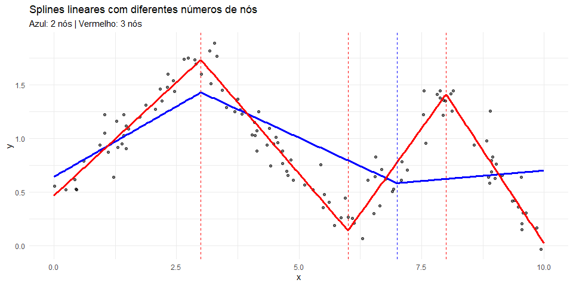
Interpretação
Cada linha vertical representa um nó.
Cada nó ativa um termo \((x - t_j)_+\).
A função é contínua, mas sua inclinação muda nesses pontos.
Limitação do spline linear
No spline linear, temos
\[ g(t_j^-) = g(t_j^+), \]
ou seja, a função é contínua.
No entanto,
\[ g'(t_j^-) \neq g'(t_j^+), \]
o que implica mudanças abruptas na inclinação.
Necessidade de maior suavidade
Em muitas aplicações, deseja-se que a função estimada varie de forma mais suave.
Isso sugere impor continuidade também nas derivadas da função.
Para obter maior suavidade, consideramos funções polinomiais de grau mais alto em cada subintervalo.
Em particular, utilizamos polinômios de grau 3.
Definição de spline cúbico
Um spline cúbico é uma função \(g\) tal que:
- em cada subintervalo, \(g\) é um polinômio de grau 3,
- \(g\), \(g'\) e \(g''\) são contínuas em todo o domínio.
Para cada nó \(t_j\), impomos
\[ g(t_j^-) = g(t_j^+), \]
\[ g'(t_j^-) = g'(t_j^+), \]
\[ g''(t_j^-) = g''(t_j^+) \]
Essas condições garantem suavidade global da função.
Consequência geométrica
A função é contínua.
A inclinação também é contínua.
A curvatura varia suavemente ao longo do domínio.
Forma analítica
Uma forma conveniente de escrever o spline cúbico é
\[ g(x) = \beta_0 + \beta_1 x + \beta_2 x^2 + \beta_3 x^3 + \sum_{j=1}^{p} \gamma_j (x - t_j)_+^3 \]
Para \(x < t_j\),
\[ (x - t_j)_+^3 = 0 \]
Para \(x > t_j\),
\[ (x - t_j)_+^3 = (x - t_j)^3 \]
Cada nó introduz uma modificação local na curvatura da função.
Estimação
Dado \((x_i,y_i)\), estimamos
\[ \hat{\beta} = \arg\min \sum_{i=1}^n (y_i - g(x_i))^2 \]
O problema permanece linear nos parâmetros.
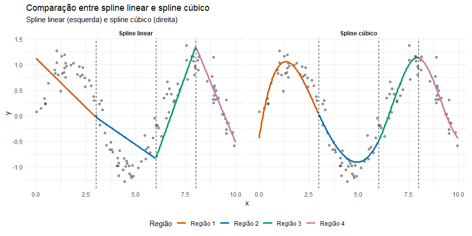
k Vizinhos Mais Próximos (KNN)
O método dos k vizinhos mais próximos (k-nearest neighbors, KNN) Benedetti (1977) e Stone (1977) é um dos métodos não paramétricos mais utilizados em aprendizado de máquina.
Seu objetivo é estimar a função de regressão:
\[ r(\mathbf{x}) = \mathbb{E}(\boldsymbol{y} \mid \boldsymbol{X} = \mathbf{x}) \]
com base na informação observada na vizinhança de \(\mathbf{x}\).
Ideia central
Dado um ponto \(\mathbf{x}\), identificamos o conjunto:
\[ \mathcal{N}_k(\mathbf{x}) = \{ \text{índices dos } k \text{ vizinhos mais próximos de } \mathbf{x} \} \]
A estimativa de \(r(\mathbf{x})\) é dada por:
\[ g(\mathbf{x}) = \frac{1}{k} \sum_{i \in \mathcal{N}_k(\mathbf{x})} y_i \]
Interpretação
A função \(g(\mathbf{x})\) é uma média local das respostas \(\boldsymbol{y}\), calculada sobre uma vizinhança definida pela proximidade em \(\boldsymbol{X}\).
Isso caracteriza o KNN como um método de:
- baixa suposição estrutural sobre \(r(\mathbf{x})\)
- forte dependência da estrutura local dos dados
Definição da vizinhança em KNN
Seja \(\mathbf{x} \in \mathbb{R}^p\). Definimos o conjunto dos \(k\) vizinhos mais próximos de \(\mathbf{x}\) como:
\[ \mathcal{N}_k(\mathbf{x}) = \left\{ i \in \{1,\dots,n\} : d(\mathbf{x}_i, \mathbf{x}) \le d_{\mathbf{x}}^{(k)} \right\} \]
onde:
- \(d(\mathbf{x}_i, \mathbf{x})\) é a distância entre \(x_i\) e \(x\);
- \(d_{\mathbf{x}}^{(k)}\) é a distância do \(k\)-ésimo vizinho mais próximo de \(\mathbf{x}\).
O conjunto \(\mathcal{N}_k(\mathbf{x})\) contém exatamente os \(k\) pontos mais próximos de \(\mathbf{x}\).
Estimador de regressão KNN
A função de regressão é estimada por uma média local:
\[ g(\mathbf{x}) = \frac{1}{k} \sum_{i \in \mathcal{N}_k(\mathbf{x})} y_i \]
A estimativa em \(\mathbf{x}\) depende exclusivamente dos valores de \(\boldsymbol{y}\) observados nos pontos mais próximos de \(\mathbf{x}\).
Característica fundamental
O estimador é:
- local
- não paramétrico
- dependente da geometria dos dados
O papel do parâmetro \(k\)
O parâmetro \(k\) controla o grau de suavização do estimador. Define o equilíbrio viés e variância
\(k\) pequeno
- ajuste mais local
- menor suavização
- baixo viés
- alta variância
\(k\) grande
- ajuste mais global
- maior suavização
- alto viés
- baixa variância
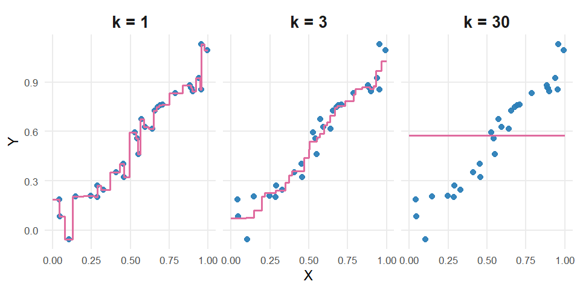
Nadaraya–Watson
No KNN, estimamos a função de regressão por:
\[ g(\mathbf{x}) = \frac{1}{k} \sum_{i \in \mathcal{N}_k(\mathbf{x})} y_i \]
Limitação do KNN
Todos os pontos na vizinhança recebem o mesmo peso.
Podemos melhorar essa abordagem atribuindo pesos diferentes às observações, de acordo com a sua proximidade de \(\mathbf{x}\).
Estimador de Nadaraya–Watson
O estimador de regressão é dado por:
\[ g(\mathbf{x}) = \sum_{i=1}^{n} w_i(\mathbf{x})\,y_i \]
onde \(w_i(\mathbf{x})\) representa o peso atribuído à observação \(i\).
Propriedade importante
\[ \sum_{i=1}^{n} w_i(\mathbf{x}) = 1 \]
Interpretação
A estimativa é uma média ponderada, onde os pesos dependem da distância entre \(\mathbf{x}\) e \(\mathbf{x}_i\).
Definição dos pesos
Os pesos são definidos por:
\[ w_i(\mathbf{x}) = \frac{K(\mathbf{x}, \mathbf{x}_i)}{\sum_{j=1}^{n} K(\mathbf{x}, \mathbf{x}_j)} \]
Em que,
- \(K(\mathbf{x}, \mathbf{x}_i)\) é um kernel de suavização, usado para medir a similaridade entre \(\mathbf{x}\) e \(\mathbf{x}_i\)
- quanto mais próximo \(\mathbf{x}_i\) está de \(\mathbf{x}\), maior será o peso
Ele controla:
- como a influência dos pontos decai com a distância
- o grau de suavização do estimador
Observações próximas recebem maior influência na estimativa de \(g(x)\).
Exemplos de kernels
Kernel uniforme
\[ K(\mathbf{x}, \mathbf{x}_i) = \mathbf{I}\{d(\mathbf{x}, \mathbf{x}_i) \le h\} \]
- todos os pontos dentro de \(h\) têm o mesmo peso
Kernel gaussiano
\[ K(\mathbf{x}, \mathbf{x}_i) = \frac{1}{\sqrt{2\pi}h} \exp\left(-\frac{d(\mathbf{x}, \mathbf{x}_i)^2}{2h^2}\right) \]
- todos os pontos recebem peso
- pontos mais próximos têm maior influência
Kernel triangular
\[ K(\mathbf{x}, \mathbf{x}_i) = \left(1 - \frac{d(\mathbf{x}, \mathbf{x}_i)}{h}\right)\mathbf{1}\{d(\mathbf{x}, \mathbf{x}_i) \le h\} \]
- peso decresce com a distância
Kernel de Epanechnikov
\[ K(\mathbf{x}, \mathbf{x}_i) = \left(1 - \frac{d(\mathbf{x}, \mathbf{x}_i)^2}{h^2}\right)\mathbf{1}\{d(\mathbf{x}, \mathbf{x}_i) \le h\} \]
- peso decresce com a distância
O papel do parâmetro \(h\)
O parâmetro \(h\) controla a largura da vizinhança.
Caso \(h\) pequeno
- menor suavização
- maior variância
- menor viés
Caso \(h\) grande
- maior suavização
- menor variância
- maior viés
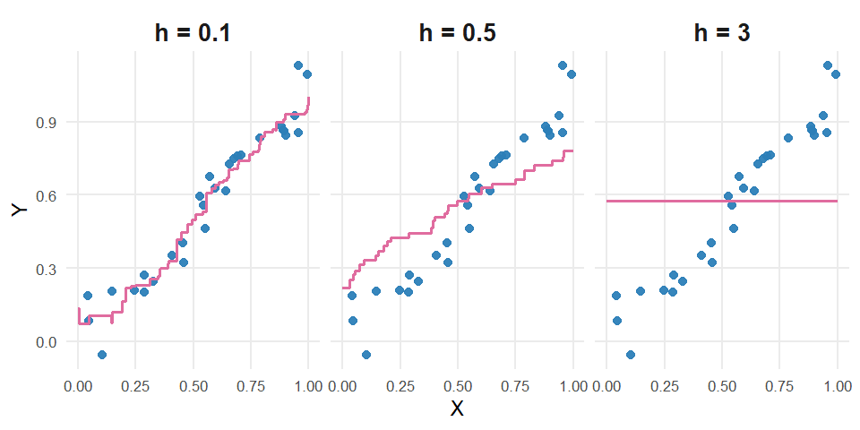
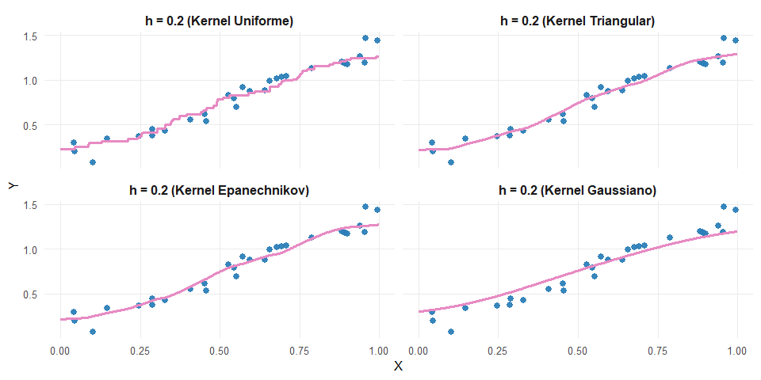
Observação prática
Na prática, observa-se que:
- a escolha do kernel tem pouca influência no resultado
- a escolha do parâmetro de suavização (\(h\)) é decisiva
O comportamento do estimador é controlado principalmente por: \(h\) (largura da vizinhança)
Regressão Polinomial Local
A regressão de Nadaraya–Watson estima \(g(x)\) como uma média ponderada local, ou seja, resolve
\[ \hat{g}(\mathbf{x}) = \arg\min_{\beta_0} \sum_{i=1}^n w_i(\mathbf{x})\,(Y_i - \beta_0)^2 \]
Isso equivale a ajustar localmente uma constante (polinômio de grau 0).
A regressão polinomial local generaliza essa ideia, permitindo que o ajuste local seja mais flexível.
Em vez de ajustar apenas um intercepto, consideramos um polinômio de grau \(p\):
\[ g(\mathbf{x}) \approx \beta_0 + \beta_1 x + \beta_2 x^2 + \cdots + \beta_p x^p \]
Para cada ponto \(\mathbf{x}\), estimamos os coeficientes resolvendo:
\[ (\hat{\beta}_0, \ldots, \hat{\beta}_p) = \arg\min_{\beta_0,\ldots,\beta_p} \sum_{i=1}^n w_i(\mathbf{x})\left(Y_i - \beta_0 - \sum_{j=1}^p \beta_j x_i^j \right)^2 \]
Ou seja, realizamos um ajuste de mínimos quadrados ponderados localmente.
A solução matricial é dada por:
\[ \hat{\boldsymbol{\beta}} = (B^t D B)^{-1} B^t D \boldsymbol{y} \]
onde:
-
\(B\) é a matriz de regressão com linhas \((1, x_i, x_i^2, \ldots, x_i^p)\)
-
\(D\) é uma matriz diagonal com pesos \(w_i(\mathbf{x})\)
- \(\boldsymbol{y}\) é o vetor de respostas
Interpretação
- Para cada ponto \(\mathbf{x}\), ajustamos um modelo diferente
- Os pesos \(w_i(\mathbf{x})\) garantem que apenas observações próximas influenciem o ajuste
- O grau \(p\) controla a flexibilidade local do modelo
Casos importantes
-
\(p = 0\) → regressão de Nadaraya–Watson
-
\(p = 1\) → regressão linear local (reduz viés nas bordas)
- \(p = 2\) → regressão quadrática local
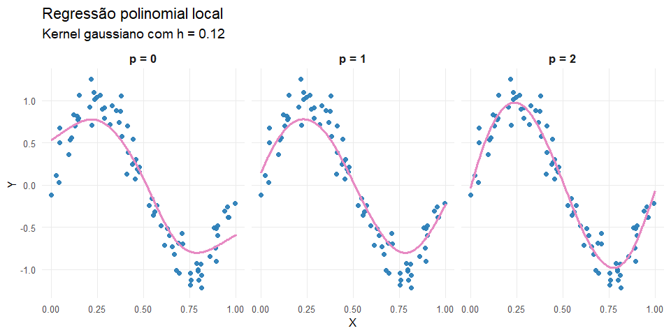
Note que
A figura compara estimadores obtidos com o mesmo kernel e a mesma largura de banda \(h\), variando apenas o grau \(p\) do polinômio ajustado localmente.
Quando \(p=0\), obtemos o estimador de Nadaraya-Watson. À medida que o grau aumenta, o modelo local torna-se mais flexível, podendo capturar melhor a curvatura da função de regressão.
Árvores de Regressão
Até agora, modelamos \(g(\mathbf{x})\) como uma função suave:
- splines
- kernels
- regressão local
Agora adotamos uma abordagem diferente:
modelar \(g(\mathbf{x})\) por partições do espaço das covariáveis.
Ideia central
Uma árvore de regressão divide o espaço de entrada em regiões:
\[ \mathcal{R}_1, \mathcal{R}_2, \ldots, \mathcal{R}_M \]
e define:
\[ \hat{g}(\mathbf{x}) = \sum_{m=1}^M c_m \mathbf{I}(\mathbf{x} \in \mathcal{R}_m) \]
Para cada região \(\mathcal{R}_m\), usamos:
\[ c_m = \frac{1}{|\mathcal{R}_m|} \sum_{i:x_i \in \mathcal{R}_m} y_i \]
Interpretação
- o espaço é dividido em “caixas”
- dentro de cada região, a previsão é constante → média dos dados
- o modelo é uma função piecewise constante
Problema de estimação
Queremos encontrar a melhor partição:
\[ \{\mathcal{R}_1, \ldots, \mathcal{R}_M\} \]
Critério de qualidade
A qualidade da árvore é medida por:
\[
\mathcal{P}(T) =
\sum_{m=1}^M \sum_{i:x_i \in \mathcal{R}_m}
(y_i - c_m)^2
\]
Interpretação do critério
- mede a variabilidade dentro das regiões
- regiões boas → valores de \(y\) homogêneos
- objetivo → minimizar a variância intra-região
Dificuldade do problema
Minimizar \(\mathcal{P}(T)\) globalmente é:
- computacionalmente inviável
- envolve todas as possíveis partições
Solução prática
Utilizamos uma abordagem gulosa:
- escolhemos a melhor divisão local
- repetimos recursivamente
Divisão em um nó
Para cada variável \(X_j\) e ponto \(s\):
\[ \mathcal{R}_1 = \{x: x_j \leq s\}, \quad \mathcal{R}_2 = \{x: x_j > s\} \]
Melhor divisão
Escolhemos \((j,s)\) que minimiza:
\[ \sum_{i \in \mathcal{R}_1} (y_i - c_{m_1})^2 + \sum_{i \in \mathcal{R}_2} (y_i - c_{m_2})^2 \]
Construção completa
- Começa com todos os dados
- Escolhe melhor split
- Divide
- Repete
Overfitting
A árvore completa tende a:
- ajustar demais os dados
- ter alta variância
Poda (pruning)
Árvores completas tendem a sobreajustar os dados.
A poda consiste em escolher uma subárvore que minimize:
\[ \sum_{m=1}^{|T|} \sum_{i:x_i \in \mathcal{R}_m} (y_i - c_m)^2 + \alpha |T| \]
-
\(|T|\) = número de folhas (complexidade da árvore)
- \(\alpha\) controla o trade-off entre ajuste e simplicidade
Valores grandes de \(\alpha\) produzem árvores menores e mais estáveis.
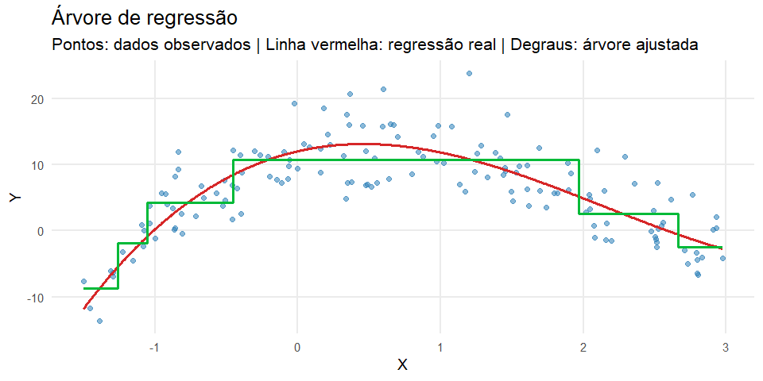
Interpretação da árvore de regressão
A linha tracejada representa a função verdadeira que gerou os dados.
A curva em degraus representa a árvore ajustada, que aproxima a função de regressão por regiões nas quais a predição é constante.
Isso evidencia que árvores de regressão constroem estimadores do tipo piecewise constante.
Vantagens das Árvores de Regressão
Além de serem facilmente interpretáveis, árvores apresentam propriedades importantes:
Variáveis categóricas
Árvores lidam naturalmente com variáveis discretas:
\[ X_1 \in \{\text{verde}, \text{vermelho}\} \]
- não é necessário criar variáveis dummy
- as divisões são feitas diretamente nas categorias
Seleção automática de variáveis
- variáveis irrelevantes tendem a não ser utilizadas
- o modelo realiza seleção de variáveis de forma implícita
Interações entre variáveis
- árvores capturam interações automaticamente
- não é necessário especificar termos de interação
Limitação importante
Apesar dessas vantagens:
- árvores individuais têm alta variância
- pequenas mudanças nos dados podem gerar árvores muito diferentes
Para melhorar o desempenho preditivo:
combinamos várias árvores em um único modelo
Por que combinar árvores?
Considere dois estimadores \(g_1(\mathbf{x})\) e \(g_2(\mathbf{x})\).
Definimos o estimador combinado:
\[ g(\mathbf{x}) = \frac{g_1(\mathbf{x}) + g_2(\mathbf{x})}{2} \]
O erro esperado é:
\[ \mathbb{E}\big[(\boldsymbol{y} - g(\mathbf{x}))^2 \mid \mathbf{x}\big] = \mathbb{V}(\boldsymbol{y} \mid \mathbf{x}) + \frac{1}{4}\mathbb{V}(g_1(\mathbf{x}) + g_2(\mathbf{x})) + \text{bias}^2 \]
Se \(g_1(\mathbf{x})\) e \(g_2(\mathbf{x})\) são:
- não viesados
- com mesma variância
- não correlacionados
então:
\[ \mathbb{E}\big[(\boldsymbol{y} - g(\mathbf{x}))^2 \mid \mathbf{x}\big] = \mathbb{V}(\boldsymbol{y} \mid \mathbf{x}) + \frac{1}{2}\mathbb{V}(g_i(\mathbf{x})) \]
Conclusão
\[ \mathbb{E}\big[(\boldsymbol{y} - g(\mathbf{x}))^2 \mid \mathbf{x}x\big] \le \mathbb{E}\big[(\boldsymbol{y} - g_i(\mathbf{x}))^2 \mid \mathbf{x}\big] \]
Assim, combinar modelos:
- mantém o viés
- reduz a variância
Ideia central do Bagging
Média de vários modelos instáveis → modelo mais estável
Bagging (Bootstrap Aggregating)
A ideia central é combinar vários estimadores:
\[ g(\mathbf{x}) = \frac{1}{B} \sum_{b=1}^B g_b(\mathbf{x}) \]
onde \(g_b(\mathbf{x})\) é a predição da \(b\)-ésima árvore.
Para cada \(b = 1, \ldots, B\):
- amostramos com reposição (bootstrap)
- ajustamos uma árvore aos dados

Propriedade fundamental
Se os estimadores são aproximadamente não viesados:
- o viés permanece semelhante
- a variância é reduzida
Assim,
\[ \mathbb{E}[(\boldsymbol{y} - g(\mathbf{x}))^2 \mid \mathbf{x}] \le \mathbb{E}[(\boldsymbol{y} - g_b(\mathbf{x}))^2 \mid \mathbf{x}] \]
Importância de Variáveis em Árvores
Bagging permite medir a relevância de cada variável:
- baseada na redução do erro (RSS)
- cada divisão reduz a variabilidade
A qualidade de uma divisão é medida pela redução do erro quadrático (RSS).
Considere um nó pai dividido em dois nós:
- esquerda (\(\mathcal{R}_{esq}\))
- direita (\(\mathcal{R}_{dir}\))
Redução do erro
A redução no RSS é dada por:
\[ \text{RSS}_{pai} - \text{RSS}_{esq} - \text{RSS}_{dir} \]
Ou, explicitamente:
\[ \sum_{i \in \mathcal{R}_{pai}} (y_i - \bar{y}_{pai})^2 - \sum_{i \in \mathcal{R}_{esq}} (y_i - \bar{y}_{esq})^2 - \sum_{i \in \mathcal{R}_{dir}} (y_i - \bar{y}_{dir})^2 \]
Interpretação
- quanto maior a redução → melhor a divisão
- boas variáveis geram partições mais homogêneas
Variáveis importantes são aquelas que mais reduzem a variabilidade da resposta.
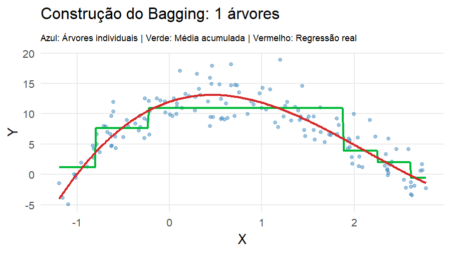
Florestas Aleatórias (Random Forest)
No Bagging, combinamos várias árvores:
\[ g(\mathbf{x}) = \frac{1}{B} \sum_{b=1}^B g_b(\mathbf{x}) \]
Como as amostras bootstrap não são i.i.d,
- Cada árvore é diferente, mas nasce do mesmo mecanismo, então têm variâncias semelhantes, ou seja,
\[ \mathrm{Var}(g_b(\mathbf{x})) = \sigma^2 \quad \text{para todo } b \]
- As árvores não são independentes, mas podemos resumir essa dependência por uma correlação média. Assim, a correlação entre quaisquer duas árvores é
\[ \mathrm{Cor}(g_b(\mathbf{x}),g_{b'}(\mathbf{x})) = \rho \quad (b \neq b') \]
Logo,
\[ \mathrm{Cov}(g_b(\mathbf{x}),g_{b'}(\mathbf{x})) = \rho \sigma^2 \]
Então,
\[ \mathrm{Var}\!\big(g(\mathbf{x}) \big) = \mathrm{Var}\!\left(\frac{1}{B}\sum_{b=1}^{B} g_b(\mathbf{x})\right) = \frac{1}{B^2}\mathrm{Var}\!\left(\sum_{b=1}^{B} g_b(\mathbf{x})\right) \]
Expandindo a variância da soma:
\[ \mathrm{Var}\!\left(\sum_{b=1}^{B} g_b(\mathbf{x})\right) = \sum_{b=1}^{B}\mathrm{Var}(g_b\big(\mathbf{x})\big) + \sum_{b \neq b'}\mathrm{Cov}\big(g_b(\mathbf{x}),g_{b'}(\mathbf{x})\big) \]
Substituindo as hipóteses:
\[ \sum_{b=1}^{B}\mathrm{Var}\big(g_b(\mathbf{x})\big)=B\sigma^2 \]
e
\[ \sum_{b \neq b'}\mathrm{Cov}\big(g_b(\mathbf{x}),g_{b'}(\mathbf{x})\big) = B(B-1)\rho\sigma^2 \]
Portanto,
\[ \mathrm{Var}\!\left(\sum_{b=1}^{B} g_b(\mathbf{x})\right) = B\sigma^2 + B(B-1)\rho\sigma^2 \]
e, assim,
\[ \mathrm{Var}\!\left(g(\mathbf{x})\right) = \frac{1}{B^2} \left[ B\sigma^2 + B(B-1)\rho\sigma^2 \right] \]
Simplificando,
\[ \mathrm{Var}\!\big(g(\mathbf{x})\big) = \frac{\sigma^2}{B} + \frac{B-1}{B}\rho\sigma^2 \]
ou, equivalentemente,
\[ \boxed{ \mathrm{Var}\!\big(g(\mathbf{x})\big) = \rho\sigma^2 + \frac{1-\rho}{B}\sigma^2 } \]
Note que,
- \(\rho\sigma^2\) é a parte da variância que não desaparece com o aumento de \(B\)
- \(\dfrac{1-\rho}{B}\sigma^2\) é a parte que cai com o número de árvores
Consequência importante
- se \(\rho\) é pequeno, o bagging reduz bastante a variância
- se \(\rho\) é grande, o ganho é limitado
Além disso,
- mesmas variáveis dominantes
- divisões semelhantes
- predições parecidas
Problema
A redução de variância depende da correlação:
árvores muito parecidas → pouco ganho ao combinar
Ideia do Random Forest
Introduzir aleatoriedade adicional:
em cada nó, escolhemos um subconjunto aleatório de variáveis
Construção
Para cada árvore:
- amostra bootstrap dos dados
- em cada divisão:
- seleciona-se aleatoriamente \(m\) variáveis
- escolhe-se o melhor split entre elas
Parâmetro chave
\(m\) = número de variáveis candidatas por split
- \(m = d \rightarrow\) Bagging
- \(m < d \rightarrow\) Random Forest
\[ m \approx \frac{d}{3} \]

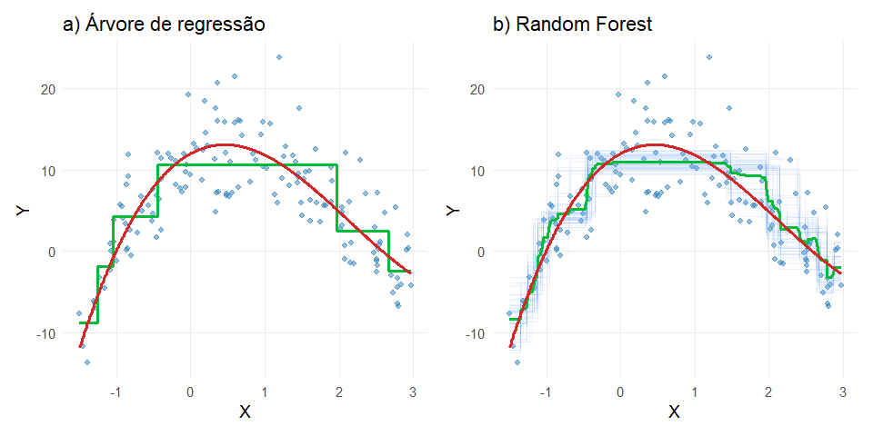
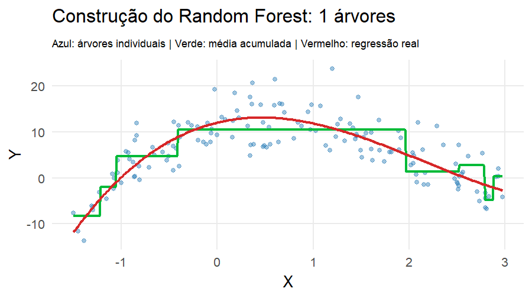
Boosting
O boosting constrói o estimador de forma sequencial, corrigindo erros do modelo anterior.
Ideia central
Começamos com um modelo simples e vamos ajustando os resíduos:
\[ r_i = y_i - g(x_i) \]
Algoritmo
- Inicialize:
\[ g(\mathbf{x}) = 0 \]
- Para \(b = 1, \dots, B\):
- Ajuste um modelo simples (ex: árvore rasa) aos resíduos:
\[ r_i = y_i - g(x_i) \]
- Atualize:
\[ g(\mathbf{x}) \leftarrow g(\mathbf{x}) + \lambda g^{(b)}(\mathbf{x}) \]
Parâmetros importantes
- \(B\) → número de iterações (\(B \approx 1000\))
-
\(\lambda\) → learning rate, tipicamente pequeno (\(\lambda \approx 0,01\))
- \(\lambda\) grande → aprendizado rápido → risco de overfitting
- \(\lambda\) pequeno → aprendizado lento → mais estável
- \(p\) → complexidade da árvore (\(p = 2\) ou \(p = 4\))
Observação
- cada modelo aprende o que o anterior errou
- reduz viés (diferente do bagging)
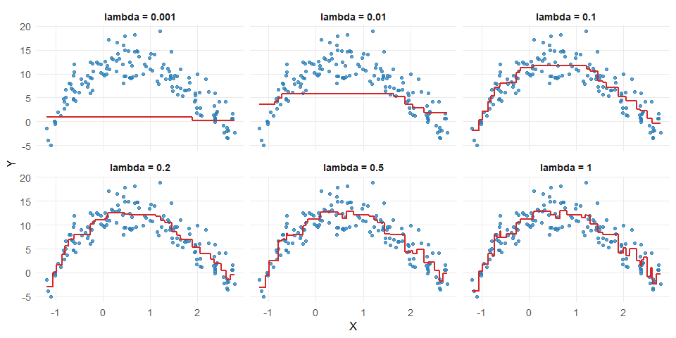
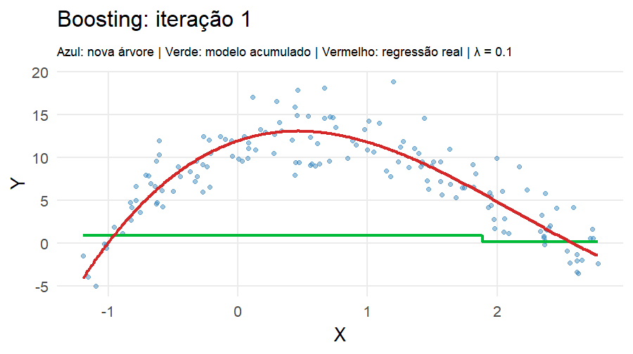
Boosting e Estimadores Fracos
O boosting não é restrito ao uso de árvores.
Podemos usar qualquer modelo como base, desde que seja um estimador fraco.
O que é um estimador fraco?
- modelo simples
- baixo poder preditivo individual
- pequeno viés de ajuste
Exemplos: árvores rasas (stumps), regressão linear simples, modelos com poucos parâmetros
Por que usar modelos fracos?
- evitam overfitting em cada etapa
- permitem correções graduais
- tornam o aprendizado mais estável
Se você usar modelos muito complexos (ex: árvores profundas):
👉 boosting pode superajustar rapidamente
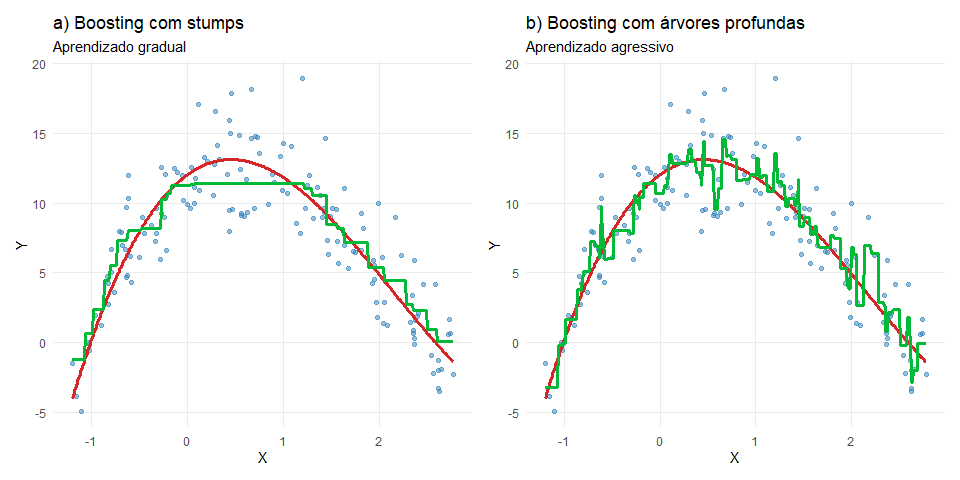
Redes Neurais Artificiais
Redes neurais são modelos que aproximam funções não lineares complexas.
No contexto de regressão, trata-se de um estimador não linear de \(r(\mathbf{x})\) que pode ser representado graficamente por uma estrutura do tipo

RNA sem camada oculta
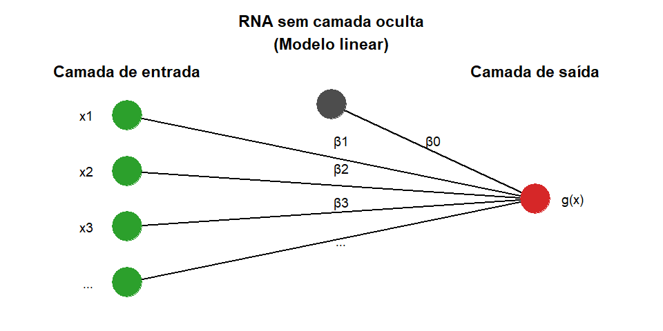
🔹 Entrada
\[ \mathbf{x} = (x_1, x_2, x_3, \cdots, x_p)^t \]
🔹 Camada de saída
\[ g(x) = f\left(\beta_0+\sum_{j=1}^{p} \beta_{j} x_j \right) \]
RNA com camada oculta
Para a rede apresentada,
🔹 Entrada
\[ \mathbf{x} = (x_1, x_2, x_3)^t \]
🔹 Camada oculta
Um dado neurônio \(j\) da camada oculta é calculado como
\[ x_j^{1} = f\left( \beta_{0,j}^{(0)} + \sum_{i=1}^{3} \beta_{i,j}^{(0)} x_i^{0} \right), \quad \text{com } x_i^{0} = x_i,\; i=1,2,3. \]
e \(f\) é uma função definida pelo usuário, chamada de função de ativação.
🔹 Saída
\[ g(x) = x^{2}_1 = f\left( \beta_{0,1}^{1} + \sum_{i=1}^{5} \beta_{i,1}^{1} x_i^{1} \right) \]
Representação de cada neurônio da rede

Funções de Ativação
Clássicas
Identidade \[ f(z)=z \]
Sigmoid \[ f(z)=\frac{1}{1+e^{-z}} \]
Tanh \[ f(z)=\frac{e^z-e^{-z}}{e^z+e^{-z}} \]
Modernas
ReLU \[ f(z)=\max(0,z) \]
Leaky ReLU \[ f(z)= \begin{cases} 0.01z, & z<0\\ z, & z\geq0 \end{cases} \]
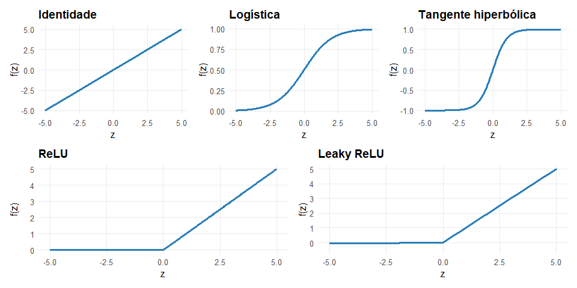
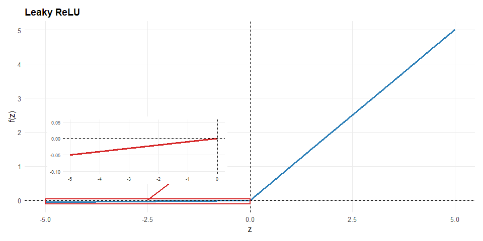
Por que precisamos de funções de ativação?
Sem \(f(\cdot)\):
\[ g(\mathbf{x}) = \text{combinação linear} \]
Com \(f(\cdot)\):
\[ g(\mathbf{x}) = \text{função não linear} \]
A função de ativação é o que dá poder às redes neurais.
Estimação: Backpropagation
Queremos estimar os parâmetros da rede neural, \(\beta\), minimizando o erro:
\[ EQM(g_{\beta}) = \frac{1}{n} \sum_{k=1}^{n} (g_{\beta}(x_k) - y_k)^2 \]
Problema
Não existe solução analítica.
Solução
Usamos gradiente descendente:
\[ \beta \leftarrow \beta - \eta \nabla EQM(g_\beta) \]
Atualização dos pesos
Para cada parâmetro:
\[ \beta_{i,j}^{(l)} \leftarrow \beta_{i,j}^{(l)} - \eta \frac{\partial EQM(g_\beta)}{\partial \beta_{i,j}^{(l)}} \]
em que,
-
\(\eta\) → taxa de aprendizado
-
\(l\) → camada
- \((i,j)\) → conexão entre neurônios
Movemos os parâmetros na direção que reduz o erro
Por que o nome Backpropagation?
Os gradientes são calculados da saída para a entrada
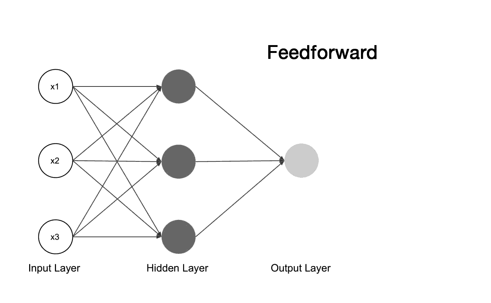
O erro “volta” pela rede ajustando os pesos
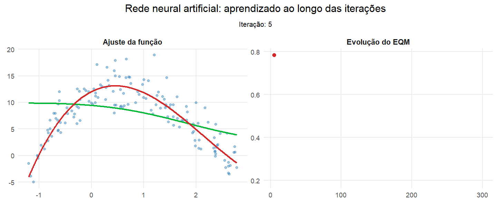
Rede neural aprendendo uma função não linear
Neste exemplo, a RNA foi ajustada para aproximar a função
\[ f(x)=12+4x-6x^2+x^3+\sin(x) \]
a partir de observações ruidosas.
A curva verde mostra a predição da rede, enquanto a curva vermelha representa a função real.
Síntese
- a função de ativação introduz não linearidade;
- a camada oculta cria novas representações dos dados;
- o backpropagation ajusta os pesos para reduzir o erro;
- com isso, a rede consegue aproximar funções complexas.
Flexibilidade vs Eficiência
🔵 Métodos paramétricos
- estrutura forte
- menos flexíveis
- convergem rápido
\[ \text{Erro} \sim n^{-1} \]
🔴 Métodos não paramétricos
- alta flexibilidade
- poucos pressupostos
- convergem lentamente
\[ \text{Erro} \sim n^{-\frac{\alpha}{\alpha + p}} \]
👉 Taxa de convergência = velocidade com que o erro diminui à medida que aumentamos o tamanho da amostra.
Observação: o parâmetro \(\alpha\) é a taxa de suavidade de \(r(x)\), ou seja, quão “regular” ou “sem variações bruscas” é a função de regressão.
Definição (um pouco) mais formal
Dizemos que \(r(x)\) tem suavidade \(\alpha\) se:
- ela possui derivadas até ordem \(\alpha\)
- essas derivadas são “bem comportadas” (limitadas)
-
Mais suavidade = menos dados necessários
- Menos suavidade = mais dados necessários